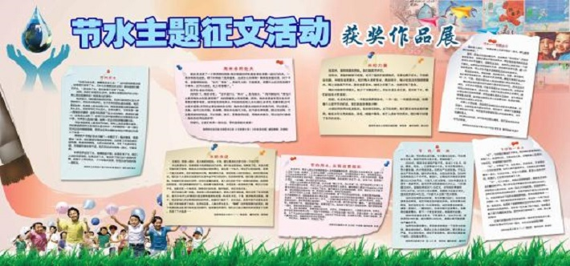

“2017中国水资源高效利用与节水技术论坛”征文通知

各有关单位： 为贯彻落实五大发展理念和新时期治水思路，以及九部委联合印发的《全民节水行动计划》，实现管水、用水、节水新跨越，提高水资源的利用效率和效益，进一步推进节水型社会建设和水生态文明建设，深入挖掘各行业用水领域的节水典型，在全社会形成节水理念和节水氛围，加快节水企业技术创新，促进节水产品与技术的应用，增进同行业间的交流与合作，拟由河海大学联合中国水利学会、中国水利经济研究会、黑龙江省水利科学研究院共同举办的“2017中国水资源高效利用与节水技术论坛”拟定于7月27-28日在哈尔滨举办。为配合这次论坛，特开展有奖征文活动。 一、会议简介 主题：问道节水 推动水资源高效利用 内容：邀请水利行业主管部门、科研院所及高校的相关领导、专家和学者做特邀报告；组织各行业用水领域节水技术持有单位开展技术（产品）交流与现场咨询活动。 目的：旨在交流水资源高效利用与节水技术的先进经验，加快推进落实最严格的水资源管理制度，推广节水新技术、保障水资源可持续利用、推进水生态文明建设，展望“十三五”时期节水型社会建设的新思路，活跃学术气氛，激励广大水利科技工作者的积极性和创造性，与会者通过学习交流，促进产学研合作，开阔视野，拓展思路，结合自己的工作实际，解决水资源高效利用科学研究和技术应用中的热点难点问题，共同探讨解决方法和路径。 二、征文主题（但不局限于） 征文围绕国家水安全战略、节水政策解读、节水型社会建设、水利经济研究、水权交易与合同节水管理、水资源保护与生态修复、水资源高效利用、非常规水资源利用、高效节水灌溉技术与农业现代化发展、水文化与水生态文明等。 三、征文对象 面向各地水资源管理部门及有关企事业单位和科研院校，广泛征集以上主题的原创性文章。 四、征文截止日期 2017年7月15日 五、征文要求 内容具有实用性、创新性和科学性；观点正确、论据充分、数据可靠、文字流畅、图表清晰、照片清楚，篇幅控制在 5000字以内(A4复印纸4页，含图表所占篇幅)。首页页脚要有作者简介信息：姓名（出身年-），性别，职称，研究方向，E-mail，以及论文基金项目信息（如果有基金项目）；论文摘要不超过200字，关键词3～5个，正文按1,1.1,1.1.1，a.b.……来分层次论述，计量单位要采用国际标准计量单位（不要用亩、斤等非国际计量单位），参考文献5条以上，文后附第一作者联系方式(姓名、单位、职称、职务、通信地址、邮编、电话（手机号）、电子信箱地址等)。 1、论文不得涉及国家秘密、商业秘密和工作秘密。 2、严禁抄袭（若原著者追究相关法律责任，由作者本人承担）。 3、征文活动不收取任何费用。 4、稿件概不返回，请作者自留底稿。 六、优秀论文评选 由《水资源保护》编辑部、《水利经济》编辑部审稿专家和本届水资源高效利用与节水技术论坛特邀专家组成优秀论文评选委员会，对全部征文进行优秀论文评选，拟评出优秀论文一等奖2篇，二等奖3篇，三等奖5篇，优秀奖10篇。获奖通知及会议邀请函将于7月20日前发送至各位获奖者，最新情况将在会议网站同步更新，敬请关注。 会议网址：www.sinowbs.org 七、征文奖励 本次论文征集活动设一等奖2篇，每篇奖金2000元；二等奖3篇，每篇奖金1000元；三等奖5篇，每篇800元；优秀奖10篇，颁发荣誉证书。获奖论文奖金由论坛组委会颁发；优秀论文荣誉证书加盖主办单位公章，在大会开幕式上颁发。 八、征文收录与发表 获奖优秀论文经投稿、审稿合格后，在《水资源保护》《水利经济》期刊上正式发表。 投稿方式：征文来稿请注明作者真实姓名、工作单位、联系电话、通讯地址、身份证号码，并标明“水资源高效利用与节水技术论坛”论文征集投稿字样。稿件请以word文档形式发电子邮件至：lunwen@sinowbs.org 九、联系方式 （一）论坛秘书处 联系人：安世侠 张新伟 董李波 电 话：010-6320 3403/3233/3104 传 真：010-6320 3745 邮 箱：szy@sinowbs.org （二）《水资源保护》编辑部 联系人：彭桃英 徐娟 王芳 电 话：025-8378 6642 邮 箱：bh1985@vip.163.com （三）《水利经济》编辑部 联系人：陈玉国 方宇彤 胡新宇 电 话：025-8378 6350 邮 箱：jj@hhu.edu.cn （四）黑龙江省水利学会 联系人：肖凤杰 电 话：0451-8668 9251 邮 箱：hljskykyb@163.com 十、其他 了解论坛最新资讯，或网上申请参会，请登录论坛官网www.sinowbs.com，或查阅微信公众号“水务论坛在线”，更多信息将在河海大学期刊部网站公布。 请各地水资源管理部门及有关企事业单位针对主题内容认真组织好论文征集有关工作。 《水资源保护》编辑部 《水利经济》编辑部 2017年4月17日 内容页右侧 专题报道 水域靓城的实现路径——郑州市水生态文明城 ·破缺水难题，谱云南新篇 ·推动节水新跨越 建设美丽新春城 ——访昆 ·盘活水资源，释放水活力——访云南省水利厅 ·濮存昕：点滴节水“微”生活 ·水，一种与生俱来的生命情结——陈启文访谈 ·张泽群：请给予水足够的尊重 《中国节水》杂志 在线阅读 在线阅读 数据报告 2016年中国水资源公报 ·2015年中国水资源公报 ·云南省水利厅公布2014年度全省实行最严 ·湖北省发布2014年湖北省水资源公报 ·重庆市2014年水资源公报正式发布 ·关于发布2014年度实行最严格水资源管理 ·2014年中国水资源公报 全国联络站